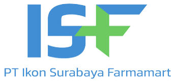

Nama pekerjaan
Di mana
Simulasi
Profil Saya
Job Alert
Lowongan Saya
Keluar
Admin
Surabaya
Cari Lowongan
Full Time
30 hari terakhir
Lowongan Kerja
Tersedia 725 lowongan kerja yang sesuai dengan pencarian Anda
Admin Administrasi

PT PERDANA SEMESTA GEMILANG LOGISTIK
Dupak, Surabaya, Jawa Timur
2 hari yang lalu - 20 pelamar

Sekitar Rp 4 - 5 juta/bulan
Administrasi merupakan suatu proses penyelenggaraan bersama atau proses kerja sama, antara sekelompok orang secara ....
Tersimpan
Administrasi Logistik

PT Ikon Surabaya Farmamart
Kalijudan, Surabaya, Jawa Timur
Kalijudan, Surabaya, Jawa Timur
3 hari yang lalu - 22 pelamar

Sekitar Rp 3 - 4 juta/bulan
PT. Ikon Surabaya Farmamart merupakan perusahaan yang bergerak dibidang Pedagang Besar Farmasi & Consumer ....
Simpan
Admin Stock
CV Berlian Retail
Ketabang, Surabaya, Jawa Timur
7 hari yang lalu - 23 pelamar

Sekitar Rp 4 - 5 juta/bulan
Simpan
Lamar Sekarang
Lulusan minimal SMA/SMK sederajat
Max 22 Tahun
Bertanggung Jawab , disiplin dan jujur
Cekatan inovatif dan Inisiatif
Diperlukan 1 tahun pengalaman kerja yang relevan untuk posisi ini
Mampu mengoperasikan ms word dan excel
Pelamar harus memiliki KTP
Persyaratan minimum:
Menjadwalkan meeting dan acara
Merawat database internal
Memesan peralatan dan perlengkapan kantor
Menyimpan dan menjaga catatan arsip karyawan baik fisik maupun digital
Mendistribusikan surat masuk dan keluar
Menyiapkan laporan dan presentasi rutin
Mengatur, menyimpan dan mencetak dokumen perusahaan sesuai dengan kebutuhan
Mengatur perjalanan bisnis
Mengupdate kebijakan kantor
Merawat database internal
Memesan peralatan dan perlengkapan kantor
Menyimpan dan menjaga catatan arsip karyawan baik fisik maupun digital
Mendistribusikan surat masuk dan keluar
Menyiapkan laporan dan presentasi rutin
Mengatur, menyimpan dan mencetak dokumen perusahaan sesuai dengan kebutuhan
Mengatur perjalanan bisnis
Mengupdate kebijakan kantor
Administrasi merupakan suatu proses penyelenggaraan bersama atau proses kerja sama, antara sekelompok orang secara tertentu untuk mencapai sesuatu tujuan tertentu yang telah ditentukan dan direncanakan sebelumnya. Kerja sama antara orang-orang tersebut berlangsung secara dan melalui organisasi
Deskripsi Pekerjaan

Sekitar Rp 4 - 5 juta/bulan
Admin Administrasi
PT PERDANA SEMESTA GEMILANG LOGISTIK
Dupak, Surabaya, Jawa Timur
2 hari yang lalu - 20 pelamar